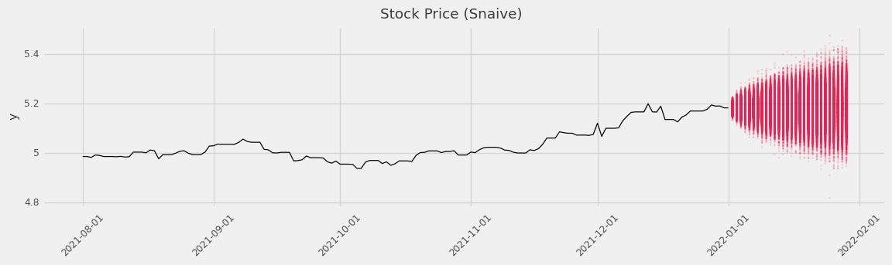

Time-series Benchmark methods that are Simple and Probabilistic
Introduction
Many methods exist for probabilistic forecasting. If you are looking for an impressive probabilistic forecasting package see the list of recommendation at the bottom of this README. This package is exceptionally ordinary. It is expected that this package may be used as a compliment to what is already out there.
Why Run Simple Methods
We have found, by experience, many good uses for the methods in this package. To often we see that forecast methods go in production without a naive method to accompany it. This is a missed opportunity.
- Naive May Be Good Enough: How good is good enough? I have almost never started a project where the firm receiving the forecast knew the answer to this question, but it is important to get to it early. I think all of us would agree that a forecast error of 0 is best, but in reality how much time should be spent spinning our wheels to get there. Further, many business applications can’t be improved upon even with significant forecast error reduction. I remember hearing a story of a firm which ordered units on pallets. The firm paid by the pallet, not the unit. The forecast team was able to reduce the forecast error, but in the end this did not change the outcome. This is the ‘pallet problem’. As data scientists it is easy to think of error reduction as a continuous function, but this need not map the same way to business value. In this example the continuous error reduction mapped to a discrete pallet. This is a long way of saying, “A naive forecast may be good enough”. What is a naive forecasting method? I typically think of two methods. The mean forecast and the naive forecast. I will go over these in more detail below. There are also some applications where naive methods have been shown to be hard to beat.
- Get A Denominator for Relative Metrics: Though naive methods can usually be beat it is good to know the relative improvement over the benchmark. This can allow a forecasting team to market their alternative forecast when the 'skill score' is impressive.
- Easy to productionize and get expectations: Get a sense for how good is good enough. In many applications a forecast team is asked to forecast, but stakeholders provide no line-in-the-sand for when the forecasting work needs to stop. One reasonable approach is to run the benchmarks found in this package then beat the best performing benchmark by a margin that is statistically significant.
- Resilience in Production - Why not have many models?: Sometimes, despite best efforts the production model does something unexpected. In this case it is nice to have a simple backup that is cheap to generate and good enough to fall back on. In this way a production forecast pipeline gains strength from a diversity of models.
- Easy Uncertainty Quantification: Recently we see that applications are not about forecast accuracy, but instead about forecasting uncertainty. Capturing the full distribution helps firms set "service levels" aka percentiles of the distribution for which they are prepared to serve. Even if you have the worlds most accurate unbiased forecast the median point is , by definition, an underforecast half the time. For this reason it is best to provide a distribution of simulated future values and the firm may decide for themselves what risks they are or are not willing to take.
Quick Example
We show a quick example below.
For more examples see Simple Example, Extended Example
Seasonal Example
import tablespoon as tbsp
from tablespoon.data import SEAS
sn = tbsp.Snaive()
df_sn = sn.predict(
SEAS, horizon=7 * 4, frequency="D", lag=7, uncertainty_samples=8000
).assign(model="snaive")
print(df_sn.head(10))
Stock Prediction
import tablespoon as tbsp
from tablespoon.data import APPL
n = tbsp.Naive()
df_n = n.predict(
APPL, horizon=7 * 4, frequency="D", lag=1, uncertainty_samples=8000
).assign(model="naive")
print(df_n.head(10))
ds rep y_sim model
0 2022-01-02 0 5.20006 naive
1 2022-01-02 1 5.16789 naive
2 2022-01-02 2 5.17641 naive
3 2022-01-02 3 5.19340 naive
4 2022-01-02 4 5.20075 naive
5 2022-01-02 5 5.17681 naive
6 2022-01-02 6 5.20302 naive
7 2022-01-02 7 5.18896 naive
8 2022-01-02 8 5.19622 naive
9 2022-01-02 9 5.17469 naive

Goals of this package
- ♙Simple: Not just in the forecasts themselves, but also from the users perspective.
- ♝Documented: It should be very clear exactly how forecasts are getting generated. We document the parameterization of the models to make this as obvious and uninteresting as possible. See Forecast Method Math Documentation
- ♜Stable: We want this package to feel rock solid. For this to happen we keep the feature set relatively small. We believe that after the initial development of this package we should spend out time maintaining the code as oppose to thinking of new features.
- ♞Distributional: Quantification of uncertainty is the name of the game.
Non-Goals
- üî•Circut Melting Focus on Speed: Not to say this is a slow package. In fact, it is very fast!
We just don't put any extra effort to make it faster than
numpy. - ü§ñNew/Complex Forecast Models: Again, this is out of scope. If you are looking for recommendations please see the bottom of the page.
Installation
Python
Citation
If you would like to cite tablespoon, please cite it as follows:
Alex Hallam. tablespoon: Time-series Benchmark methods that are Simple and Probabilistic https://github.com/alexhallam/tablespoon, 2021. Version 0.1.6.
@misc{tablespoon,
author={Alex Hallam},
title={{tablespoon}: {Time-series Benchmark methods that are Simple and Probabilistic},
howpublished={https://github.com/alexhallam/tablespoon},
note={Version 0.4.5,
year={2022}
}
References
- Hyndman, R.J., & Athanasopoulos, G. (2021) Forecasting: principles and practice, 3rd edition, OTexts: Melbourne, Australia. OTexts.com/fpp3. Accessed on 2021-09-26.
Recommended probabilistic forecasting packages
There are many packages that can compliment tablespoon
forecast: The king of forecasting packages. Rob Hyndman is a professor of forecasting and has served as editor of the journal "International Journal of Forecasting". If you are new to forecasting please read his free ebook fpp3.
prophet: A very capable and reliable forecasting package. I have never seen a bad forecast come out of prophet.
gluonts. If you are itching to use neural nets for forecasting this is a good one to pick.
Learn more about forecasting
- Read fpp3
- Join the International Institute of Forecasting and read their publications.